The Big Idea
Saying “an index makes the query fast” is true, but too shallow. A database index is a separate structure built with the CREATE INDEX statement. It takes up its own disk space and holds a copy of the indexed data — so it is pure redundancy, just like the index at the back of a book. Creating an index never changes the table itself.
Think of a telephone directory: all entries are in a well-defined order, and that order is what makes finding something fast. A database index works the same way — but it must also handle constant inserts, deletes, and updates immediately, without physically moving large amounts of data.
CREATE INDEX idx_name ON employees (last_name);1. Index Leaf Nodes — the doubly linked list
The index can't store data physically in sorted order, because every insert would have to shift all following entries. Instead, the database keeps a logical order using a doubly linked list: each node points to its predecessor and successor, like a chain. A new entry is inserted just by re-pointing a few links — no big data movement.
These chained nodes are called index leaf nodes. Each leaf node lives in a database block/page (a few KB), packed with as many sorted entries as fit. So the sort order exists on two levels: entries within each leaf node, and the leaf nodes linked to each other.
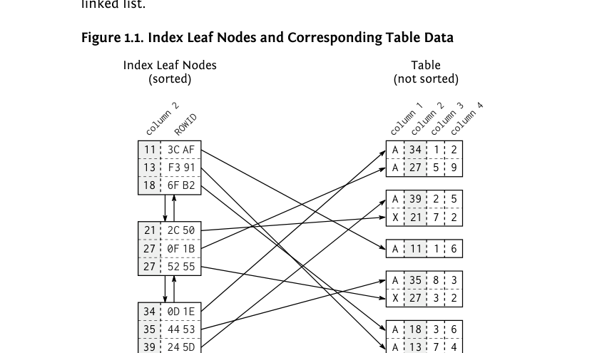
Each index entry contains the indexed column (the key) plus a pointer to the table row (ROWID/RID). The table data is stored as an unsorted heap with no connection between rows.
2. The Search Tree (B-Tree) — finding the right leaf node
Leaf nodes sit on disk in arbitrary physical order — like a phone book with shuffled pages. To find the right page quickly, the database adds a second structure on top: a balanced search tree (B-tree). Branch-node entries hold the biggest value of each leaf node they point to, and layers repeat until a single root node remains. Because the tree is balanced, every leaf is the same number of steps away from the root.
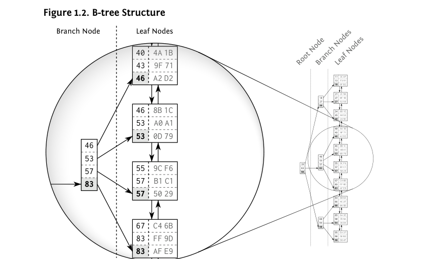
3. Why indexes can still be slow
The myth of the “degenerated index” blames a broken tree — but the tree is fine. An index lookup has three steps, and only the first is bounded:
- Tree traversal — fast, bounded by the tree depth.
- Following the leaf node chain — if many entries match, the database must read the next leaf nodes too.
- Fetching the table data — one table access per hit, and matching rows are usually scattered across many table blocks.
Oracle's explain plan shows these steps explicitly:
INDEX UNIQUE SCAN -- tree traversal only (at most one match)
INDEX RANGE SCAN -- tree traversal + leaf node chain
TABLE ACCESS BY INDEX ROWID -- fetch the actual row, once per matchLogarithmic Scalability at a Glance
| Tree Depth | Index Entries (4 per node) |
|---|---|
| 3 | 64 |
| 5 | 1,024 |
| 8 | 65,536 |
| 10 | 1,048,576 |
Tree depth = logentries-per-node(number of index entries) — adding a level multiplies capacity; real indexes hold hundreds of entries per node, so depth grows extremely slowly.
Chapter 2: The WHERE Clause
This chapter explains how the database uses an index when filtering rows — and when it can't. The WHERE clause is split into two kinds of conditions: access predicates (which locate the start of the index range) and filter predicates (which just discard rows after they're read).
Equality (=) and primary keys
An equality condition on an indexed column is the ideal case: the B-tree traversal lands directly on the matching entries.
SELECT first_name, last_name
FROM employees
WHERE employee_id = 123;Concatenated (multi-column) indexes
A concatenated index is one index across multiple columns, sorted like a phone book: by the first column, then the second, and so on. Consequence: it only supports queries that constrain the leftmost column(s) — you cannot search efficiently on the second column alone.
CREATE INDEX emp_sub_emp ON employees (subsidiary_id, employee_id);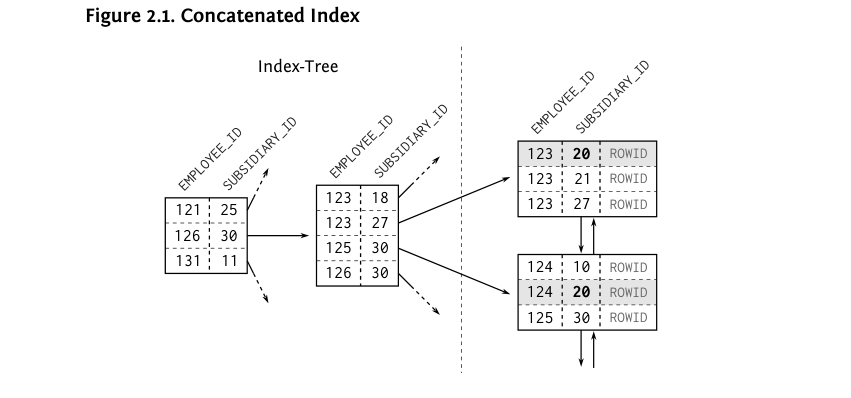
Ranges: >, < and BETWEEN
Range conditions still use the index, but they stop the “exact lookup” behavior: everything after the range column is only a filter, not an access path. Rule of thumb: put equality columns first in the index, range columns last.
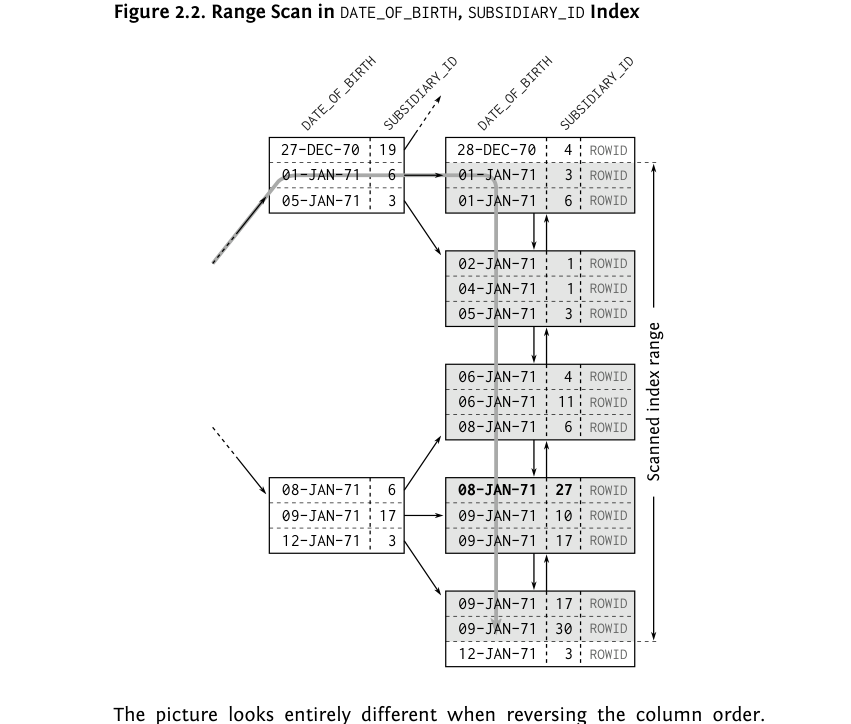
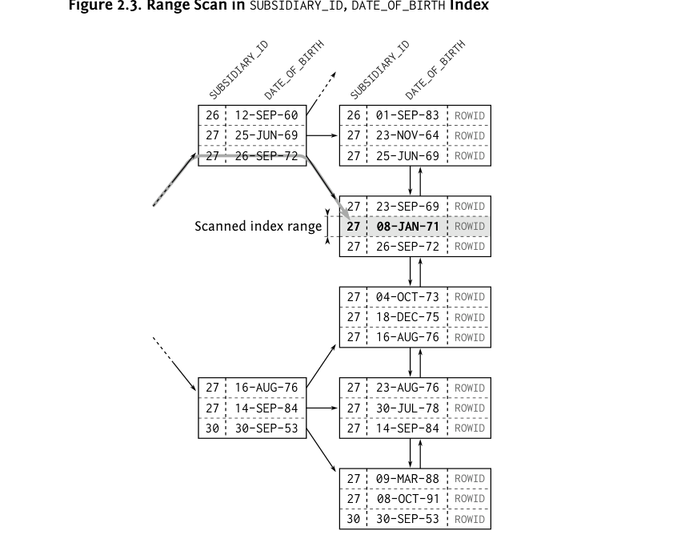
Functions on columns defeat the index
Wrapping an indexed column in a function makes it a “black box” — the index on the raw column cannot be used:
SELECT first_name, last_name, phone_number
FROM employees
WHERE UPPER(last_name) = UPPER('winand'); -- index on LAST_NAME is NOT usedThe fix is a function-based index on exactly the expression used:
CREATE INDEX emp_up_name
ON employees (UPPER(last_name));LIKE filters
Only the part before the first wildcard can use the index. LIKE 'WINA%' is index-friendly; LIKE '%TERM' (leading wildcard) cannot use the index at all and forces a full scan.
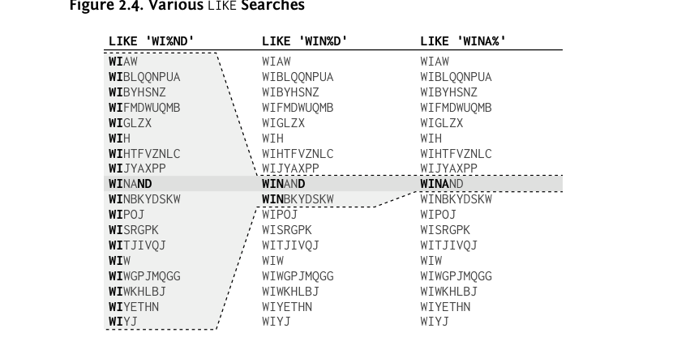
NULL handling
Most databases (except Oracle) do not index NULL values, so IS NULL cannot use a regular index. Oracle treats empty strings as NULL and does index them. Workarounds: a NOT NULL constraint with a default, or a partial/filtered index like:
CREATE INDEX idx_processed
ON messages (processed)
WHERE processed = 'N'; -- partial index (PostgreSQL)Obfuscated conditions
- Dates: never wrap the column —
WHERE TRUNC(sale_date) = ...kills the index; use a range instead:sale_date >= TRUNC(...) AND sale_date < TRUNC(...) + 1. - Numeric strings: compare numbers as numbers (
col = 42), not as strings (col = '42'), or the index on the number can't be used. - Math:
col * 2 = 10→ rewrite ascol = 5so the index applies.
Chapter 3: Performance and Scalability
Scalability = how performance changes when something grows (data volume, system load). A single fast measurement means little — you need the whole curve.
The test query
The chapter benchmarks one query with two different indexes while growing the data volume:
SELECT count(*)
FROM scale_data
WHERE section = ?
AND id2 = ?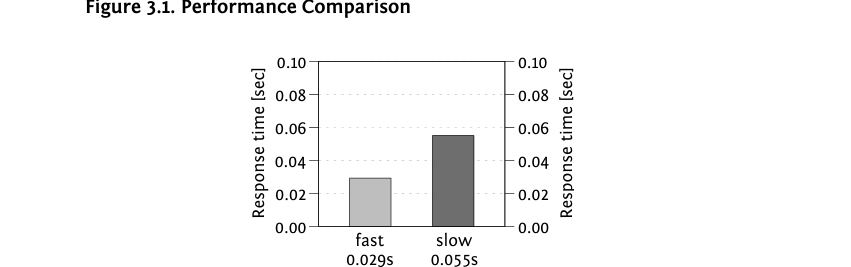
Data volume grows → sloppy indexing explodes
With 100× more data, the well-designed index barely slows down (logarithmic B-tree growth), while the sloppy one — which uses a filter predicate instead of an access predicate — gets 20× slower:
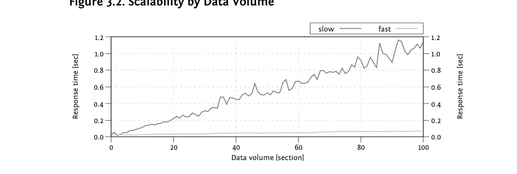
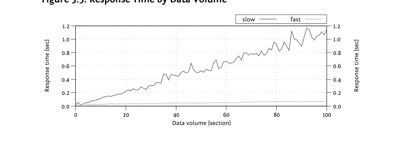
Check the execution plan for hidden filter predicates
Often the plan looks fine, but the predicate info is hidden in a tooltip. A condition shown as just “Predicate” (not “Seek Predicate”) means the index located the range but the database still checks every row — that's what makes an index “slow” under load:
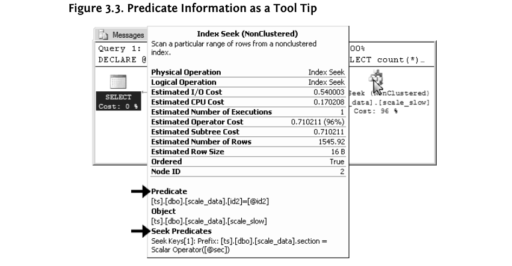
System load makes it worse
Under concurrent load (25 parallel queries), the sloppy index balloons to 32 seconds — 30× slower than with no load — while the clean index stays under 2 seconds. Even a full copy of production data in dev won't reproduce this; you must also reproduce the load:
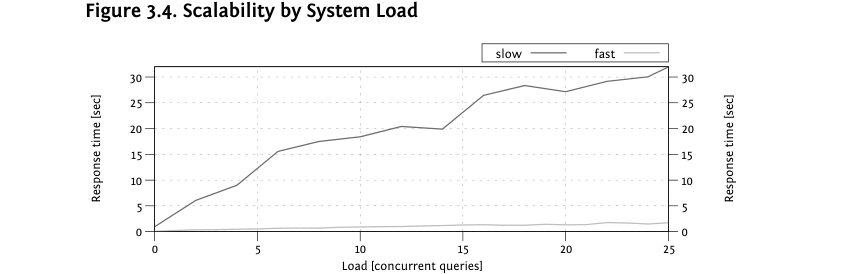
Response time vs throughput — bigger hardware isn't faster
- Bigger hardware is like a wider highway, not a faster car: it handles more load (throughput), but a single query won't get faster (response time).
- Single-core CPU speed stopped improving around 2000; multi-core helps concurrency, not one query.
- More infrastructure (firewalls, separate app/DB servers) adds network latencies — production can even be slower than a dev laptop.
- Disk seek time (~ms on HDD, ~10× less on SSD) happens once per B-tree level — 4 levels ≈ a few dozen ms, but joins can trigger thousands of seeks.
Chapter 4: The Join Operation
A join combines two tables into a denormalized result. All join algorithms process only two tables at a time — bigger joins are chains of two-table joins. Join order doesn't change the result, but it changes performance, and the optimizer tries all permutations (n! growth — another reason to use bind parameters).
1. Nested Loops
The most fundamental join: run an outer query, then for each row run a second query against the other table — like two nested loops. Fast when the driving query returns few rows; it needs an index on the inner table's join column. Beware the N+1 selects problem: ORM tools that loop in application code and query per row (N+1 queries) are slow because every extra query adds network + disk latency. Fix: execute joins in the database (e.g. eager fetching):
SELECT me.employee_id, me.subsidiary_id, me.last_name
FROM employees me
LEFT JOIN sales s ON (s.employee_id = me.employee_id)
WHERE UPPER(me.last_name) LIKE 'WIN%'
ORDER BY s.employee_id, s.subsidiary_id;2. Hash Join
Aims at nested loops' weak spot — the many B-tree traversals. It loads one side of the join into an in-memory hash table and probes it for each row of the other side. Do NOT index the join columns for a hash join — only index the independent WHERE predicates:
SELECT *
FROM sales s
JOIN employees e ON (s.subsidiary_id = e.subsidiary_id
AND s.employee_id = e.employee_id)
WHERE s.sale_date > trunc(sysdate) - INTERVAL '6' MONTH
-- only SALE_DATE is an independent predicate → index THAT, not the join columns3. Sort Merge
Merges two sorted lists like a zipper. Needs the same indexes as hash join (independent predicates only), plus its unique trait: absolute symmetry — join order and outer-join direction don't matter, and it can even do FULL OUTER JOIN. It's rarely used because sorting both sides is expensive, but it shines when the inputs are already sorted (e.g. via index order, avoiding the sort entirely — see Chapter 6).
Chapter 5: Clustering Data (The Second Power of Indexing)
Clustering data = storing consecutively-accessed data close together so fewer I/O operations are needed. An index automatically clusters rows with similar values together (sorted leaf nodes) — the book calls this the second power of indexing.
1. Using filter predicates intentionally
A filter predicate is usually a sign of a wrong column order — but sometimes you add one on purpose to group the rows you'll read. A leading-wildcard LIKE can't narrow the index range, so put it into the index as a trailing (filter) column after the real access column:
CREATE INDEX empsubupnam ON employees
(subsidiary_id, UPPER(last_name));
SELECT first_name, last_name, subsidiary_id, phone_number
FROM employees
WHERE subsidiary_id = ?
AND UPPER(last_name) LIKE '%INA%';SUBSIDIARY_ID narrows the scan; the LIKE is applied as a filter while reading — all matching rows sit next to each other in the leaf nodes.
2. Index-Only Scan (covering index)
If the index contains all columns the query needs (WHERE and SELECT list), the database never touches the table at all — one of the most powerful tuning tricks:
CREATE INDEX sales_sub_eur ON sales (subsidiary_id, eur_value);
SELECT SUM(eur_value)
FROM sales
WHERE subsidiary_id = ?; -- plan: INDEX RANGE SCAN only, no TABLE ACCESSIn SQL Server you can add extra "nonkey" columns (leaf-only, not searchable) with INCLUDE purely to make the index covering:
CREATE INDEX empsubupnam ON employees (subsidiary_id, last_name)
INCLUDE(phone_number, first_name);3. Index-Organized Tables (IOT) / Clustered Indexes
Take the covering-index idea to the extreme: store the whole table inside a B-tree (no heap). Benefits: saves the heap's space, and every lookup is automatically index-only. Drawback: a secondary index on an IOT must store the logical key instead of a physical ROWID, so each row access costs a full extra tree traversal:
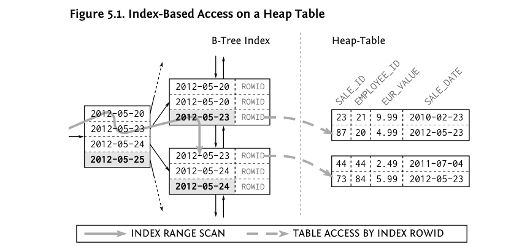
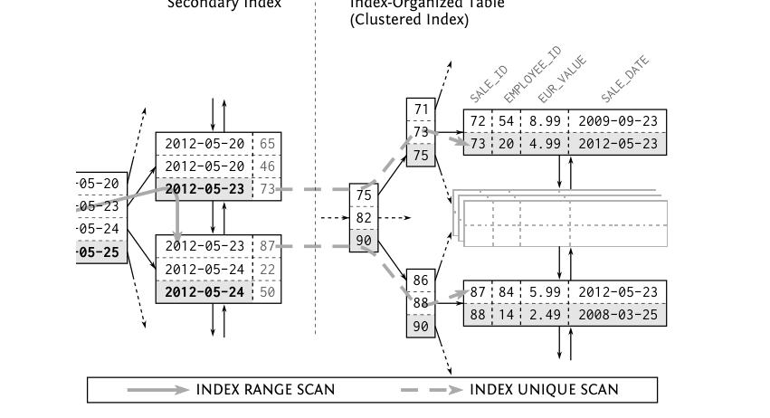
Chapter 6: Sorting and Grouping (The Third Power of Indexing)
Sorting is expensive: the database must buffer the complete input before producing the first output row. But an index is already sorted — so if the index order matches the ORDER BY, the sort disappears and results stream out immediately (pipelined). That's the third power of indexing.
Indexing ORDER BY
The index used for the WHERE clause must also cover the ORDER BY columns:
CREATE INDEX sales_dt_pr ON sales (sale_date, product_id);
SELECT sale_date, product_id, quantity
FROM sales
WHERE sale_date = TRUNC(sysdate) - INTERVAL '1' DAY
ORDER BY sale_date, product_id; -- SORT ORDER BY vanishes from the plan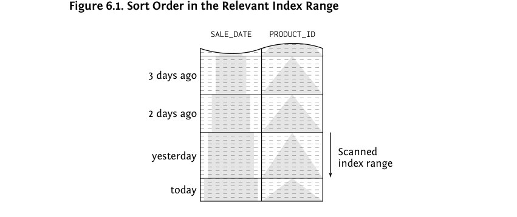
ASC / DESC and reverse scans
Databases can read an index backwards (thanks to the doubly linked leaf nodes), so ORDER BY ... DESC works with a plain ASC index via an INDEX RANGE SCAN DESCENDING. But mixed directions (ASC, DESC) need a mixed-order index:
CREATE INDEX sales_dt_pr ON sales (sale_date ASC, product_id DESC);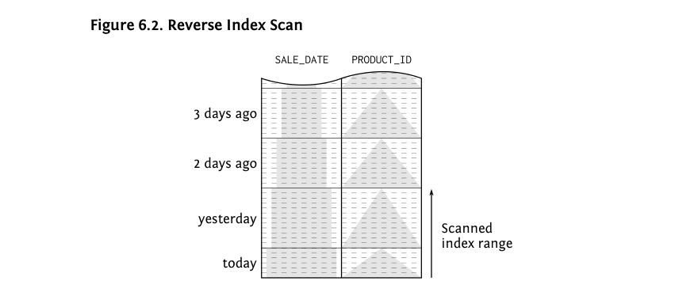
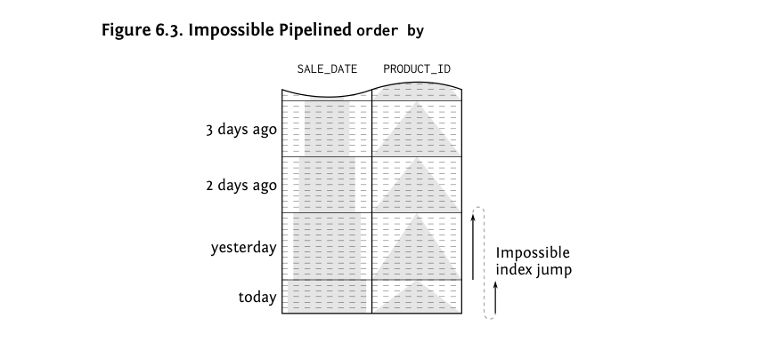
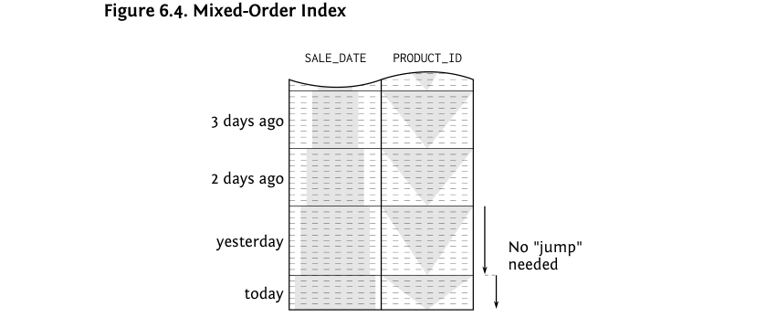
NULLS FIRST / LAST and database support
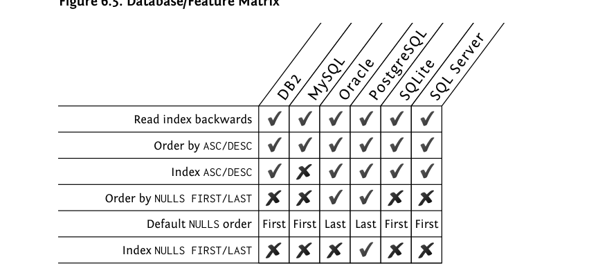
Indexing GROUP BY
GROUP BY has two algorithms: hash (materializes a hash table) and sort/group. The sort/group variant can skip the sort if an index already delivers rows grouped by the key — making GROUP BY pipelined too:
SELECT product_id, sum(eur_value)
FROM sales
WHERE sale_date = TRUNC(sysdate) - INTERVAL '1' DAY
GROUP BY product_id; -- served in index order by sales_dt_pr, no sort neededChapter 7: Partial Results (Top-N & Pagination)
Sometimes you only need the first few rows (e.g. the 10 most recent messages) — or the next page of them. Thanks to the pipelined ORDER BY from Chapter 6, these queries can stop early instead of sorting everything.
Top-N queries
Syntax varies by database, but all rely on a pipelined ORDER BY to stop after N rows (Oracle shows this as COUNT STOPKEY):
-- PostgreSQL / MySQL
SELECT * FROM sales ORDER BY sale_date DESC LIMIT 10;
-- SQL standard (Oracle 12c+, SQL Server 2012+)
SELECT * FROM sales ORDER BY sale_date DESC FETCH FIRST 10 ROWS ONLY;
-- SQL Server
SELECT TOP 10 * FROM sales ORDER BY sale_date DESC;
-- Oracle < 12c
SELECT * FROM ( SELECT * FROM sales ORDER BY sale_date DESC ) WHERE ROWNUM <= 10;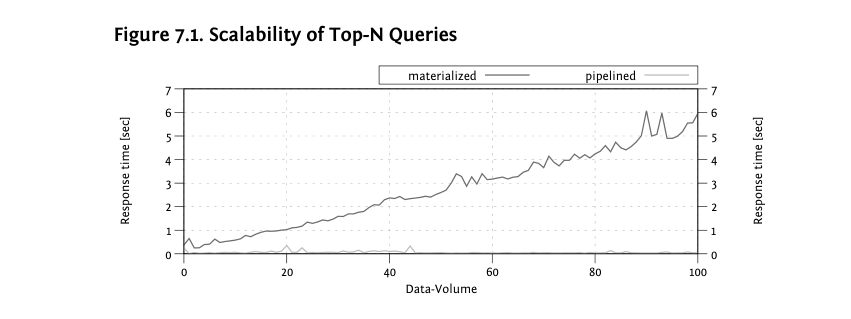
Fetching the next page: OFFSET vs SEEK
Offset method — simple, but re-reads and discards all previous rows, so deeper pages get slower and pages "drift" when new rows are inserted:
SELECT * FROM sales ORDER BY sale_date DESC
OFFSET 10 FETCH NEXT 10 ROWS ONLY; -- or: LIMIT 10 OFFSET 10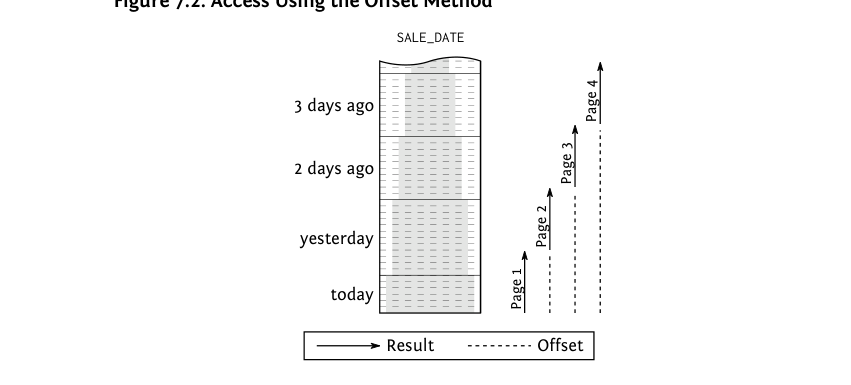
Seek method — uses the last row of the previous page as the starting point (keyset pagination), so every page costs the same. Works with row-value comparison:
SELECT * FROM sales
WHERE (sale_date, sale_id) < (?, ?) -- values of the last row of the previous page
ORDER BY sale_date DESC, sale_id DESC
FETCH FIRST 10 ROWS ONLY;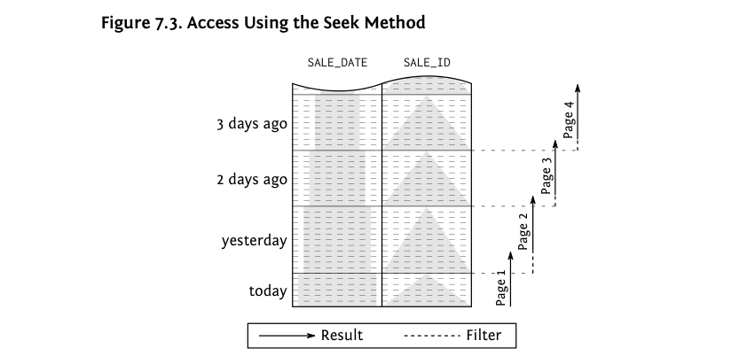
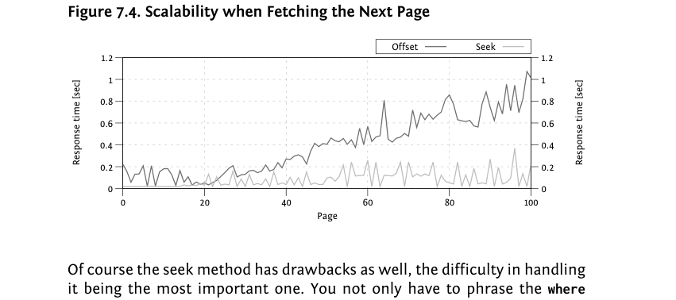
Chapter 8: Modifying Data (INSERT / DELETE / UPDATE)
Indexes speed up reads but slow down writes: an index is pure redundancy, so every write must keep the index copies consistent too. The number of indexes on a table is the dominant cost factor for writes.
INSERT
Cannot benefit from indexes (no WHERE clause). The row goes into any heap block with free space — fast. But the new entry must be added to every index on the table, each requiring a B-tree traversal and possibly node splits. One index can already slow an insert ~100×; each additional index multiplies the cost:
DELETE
Works like a SELECT (WHERE can use indexes to find rows) plus removal of the row and its index entries, keeping the trees balanced. So delete performance also grows with the number of indexes. Special case: TRUNCATE TABLE deletes all rows in one shot — very fast, but it does an implicit commit and fires no triggers. MVCC note: PostgreSQL only flags rows deleted and cleans up indexes later during VACUUM, so its delete speed doesn't depend on index count.
UPDATE
An update relocates changed index entries: remove the old entry, insert the new one — cost ≈ delete + insert. It only touches indexes that contain the updated columns, so updating a single column is much cheaper than updating all columns (beware ORMs that set every column unless dynamic-update is on):
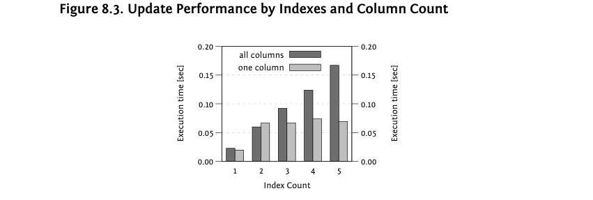
Appendix A: Execution Plans
The optimizer works like a compiler: it translates SQL into an execution plan — the first place to look when a statement is slow. Every database can show it; the syntax differs:
Oracle
EXPLAIN PLAN FOR SELECT * FROM employees WHERE employee_id = 123;
SELECT * FROM TABLE(dbms_xplan.display); -- prints the plan tablePostgreSQL
EXPLAIN SELECT * FROM employees WHERE employee_id = 123;
EXPLAIN ANALYZE ...; -- actually runs it and shows real row counts/times
-- with bind variables, prepare first (PG ≥ 9.2 plans at execute time):
PREPARE stmt(int) AS SELECT $1;
EXPLAIN EXECUTE stmt(1);SQL Server
Use the graphical or tabular plan in SQL Server Management Studio ("Include Actual Execution Plan"), or SET SHOWPLAN_TEXT ON / SET STATISTICS PROFILE ON. In tabular plans, hover an index operation to see Seek Predicates vs plain Predicate (filter) in the tooltip.
MySQL
EXPLAIN SELECT * FROM employees WHERE employee_id = 123;Reading plans: access vs filter predicates
- Access predicate (Oracle:
access, PostgreSQL:Index Cond, SQL Server:Seek Predicate) — defines the start/stop of the index range traversal. This is what makes a lookup fast. - Index filter predicate (Oracle:
filteron index ops) — applied during the leaf scan but does not narrow the scanned range. - Table filter predicate (PostgreSQL:
Filter) — evaluated only after the row is fetched from the table.
Common operations to recognize: INDEX UNIQUE SCAN, INDEX RANGE SCAN (…DESCENDING), TABLE ACCESS BY INDEX ROWID, TABLE ACCESS FULL, HASH JOIN / NESTED LOOPS / MERGE JOIN, SORT ORDER BY (…STOPKEY), COUNT STOPKEY for Top-N.
Index (Glossary)
The final pages of the book are a glossary of terms (PLAN_TABLE, ROWID, clustering factor, MVCC, etc.). The concepts behind the important ones are covered in the chapter summaries above.